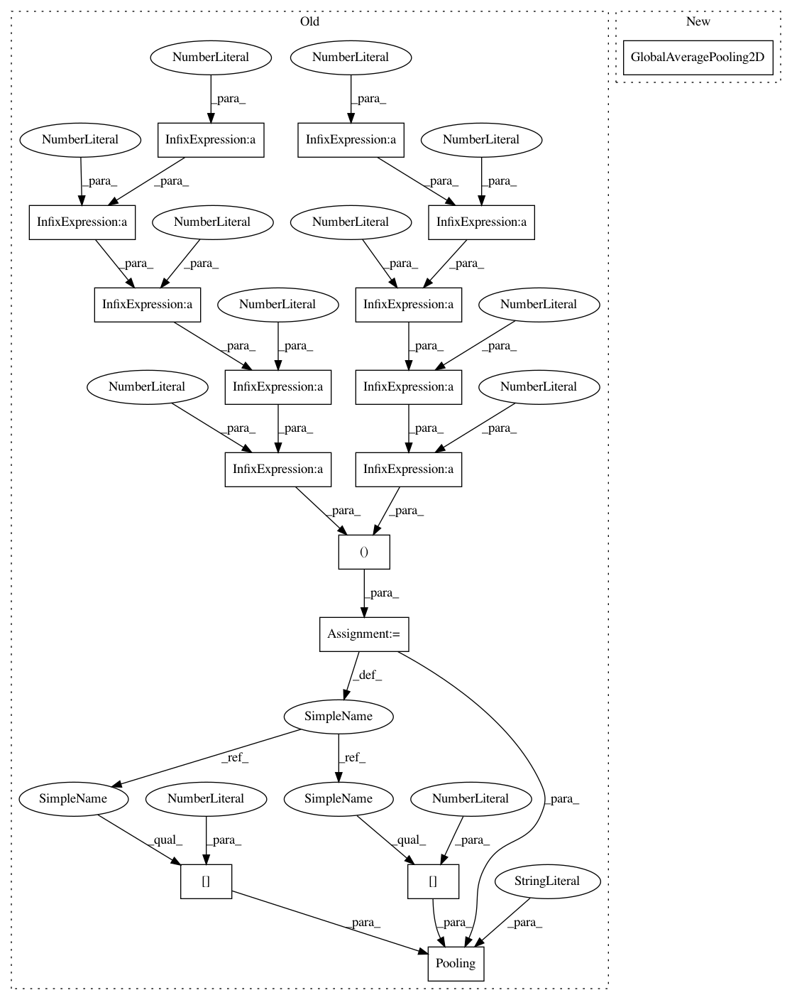

c5b5e832877397c3bcc6021080087553d20e840c,dlpy/applications.py,,ResNet50_Caffe,#Any#Any#Any#Any#Any#Any#Any#Any#Any#Any#Any#Any#Any#Any#,1272
Before Change
conv_short_cut=conv_short_cut))
// Bottom Layers
pooling_size = (width // 2 // 2 // 2 // 2 // 2, height // 2 // 2 // 2 // 2 // 2)
model.add(Pooling(width=pooling_size[0], height=pooling_size[1], pool="mean"))
model.add(OutputLayer(act="softmax", n=n_classes))
After Change
conv_short_cut=conv_short_cut))
// Bottom Layers
model.add(GlobalAveragePooling2D())
model.add(OutputLayer(act="softmax", n=n_classes))
In pattern: SUPERPATTERN
Frequency: 3
Non-data size: 16
Instances
Project Name: sassoftware/python-dlpy
Commit Name: c5b5e832877397c3bcc6021080087553d20e840c
Time: 2019-05-30
Author: Wenyu.Shi@sas.com
File Name: dlpy/applications.py
Class Name:
Method Name: ResNet50_Caffe
Project Name: sassoftware/python-dlpy
Commit Name: c5b5e832877397c3bcc6021080087553d20e840c
Time: 2019-05-30
Author: Wenyu.Shi@sas.com
File Name: dlpy/applications.py
Class Name:
Method Name: ResNet34_SAS
Project Name: sassoftware/python-dlpy
Commit Name: c5b5e832877397c3bcc6021080087553d20e840c
Time: 2019-05-30
Author: Wenyu.Shi@sas.com
File Name: dlpy/applications.py
Class Name:
Method Name: ResNet152_Caffe